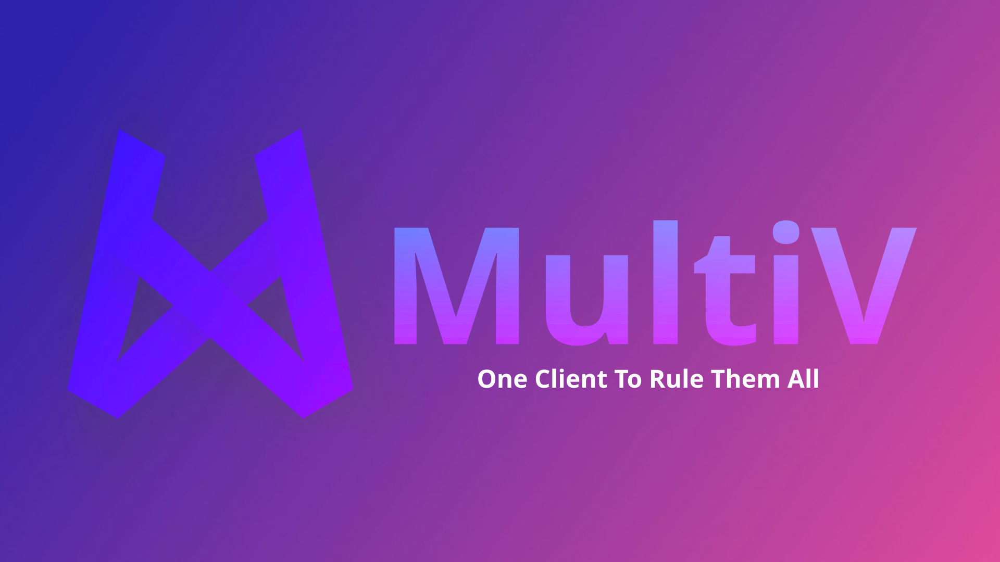

Choose an audio source
Use a microphone, Windows desktop audio, or a playlist. Select the source that fits the transmission.

Project banner · assets/banner.svg
Virtual radio, one desktop client
MultiV brings audio input, signal configuration, station settings, and virtual radio simulator connections into one desktop workflow.
The workflow
Set up a station, choose an input, configure its signal, and control the transmission from the same application.
Use a microphone, Windows desktop audio, or a playlist. Select the source that fits the transmission.
Set the station frequency and signal mode, then adjust the available audio and transmission controls.
Edit station identity and profile information, browse the station directory, and control transmission state.
Signal modes
MultiV includes conventional transmission controls alongside software-generated digital and narrowband modes.
Signal paths and receiver support vary by mode. See the project documentation for mode-specific requirements and limitations.
Simulator integrations
MultiV is designed to bring virtual radio simulator connections into one desktop workflow. The roadmap is the source of truth for provider support and integration status.
Getting started
Install the required Python version, install the project dependencies, and launch the desktop client from the project directory.
python -m pip install -r requirements.txt
python main.py